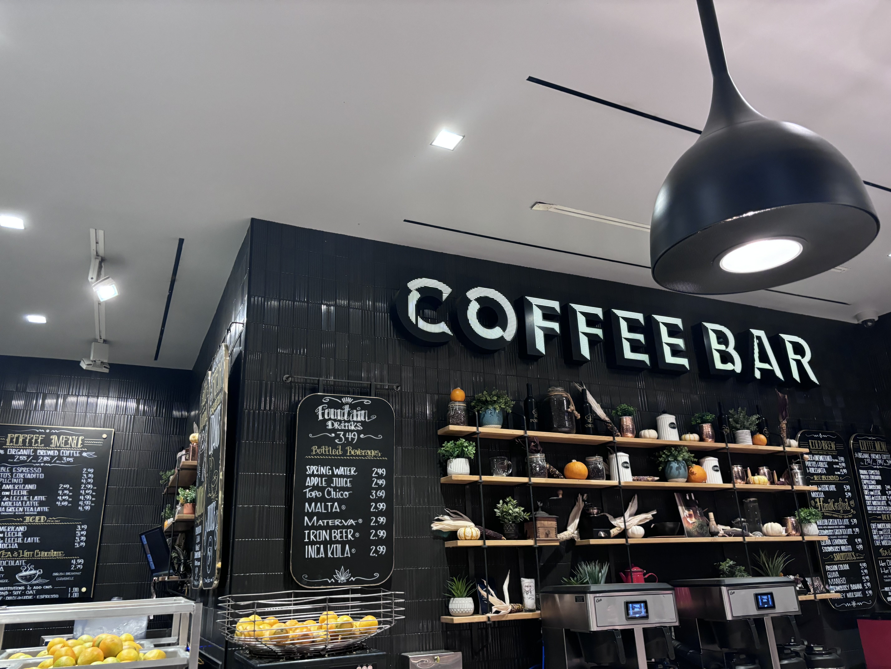
.jpg)
(scroll down for part 4B)
For the mosaicing portion of the project, I started by capturing multiple images of the same scene with overlapping regions, aiming for a 40%-70% overlap between them. Using the overlapping regions, I would manually mark out the correspondence points between the pictures so that I could stick them together into a mosaic later. For some of the other images that I only wanted to rectify but not make a mosaic out of, I just marked out a quadrilateral that I wanted to rectify into a shape I manually defined, a rectangle. As to the mosaic component, when taking the images I made sure to take them close together in time so that I could minimize differences in exposure, lighting, and moving objects. In addition, to ensure consistency I took the images from the same position with my iPhone, I made sure to keep the relative position of my phone the same but only rotating my camera slightly to capture adjacent parts of the scene.
Images I took that I plan to rectify:

Images I took that I plan to make a mosaic out of:
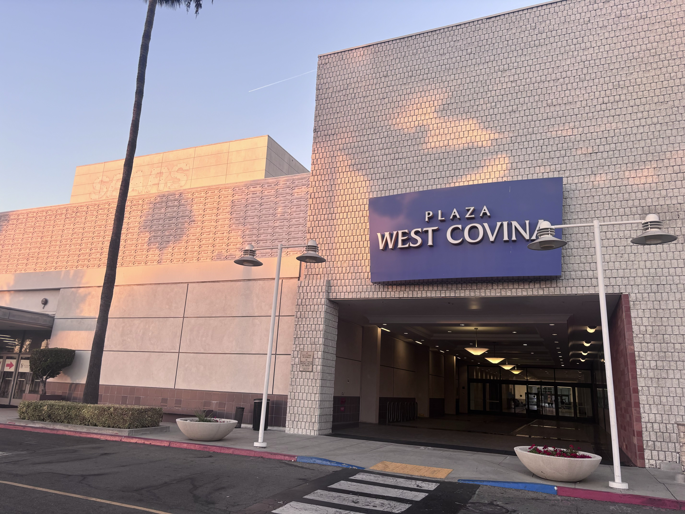
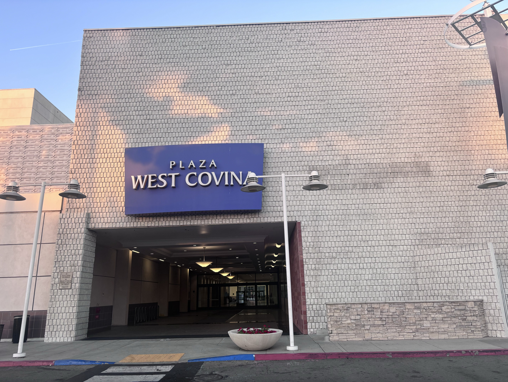
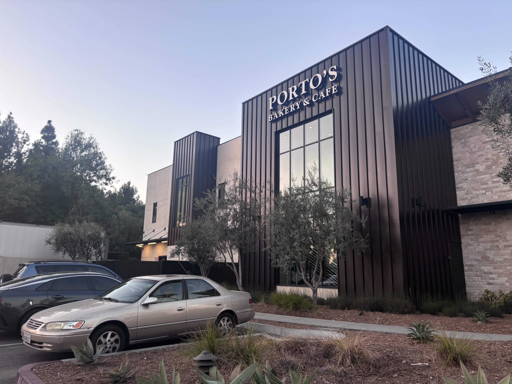
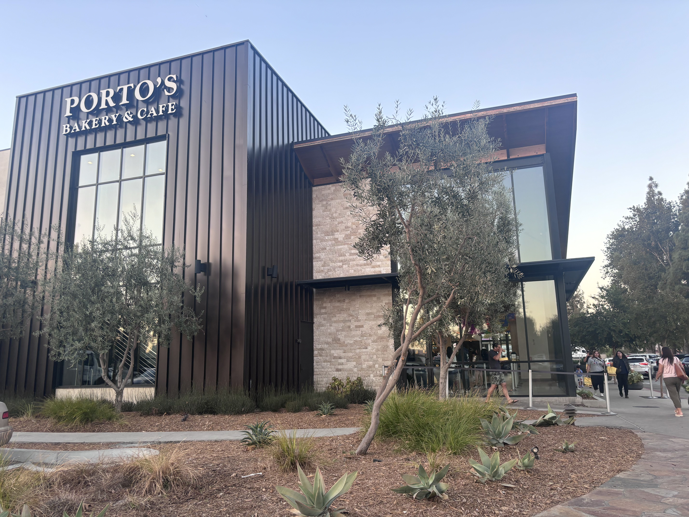
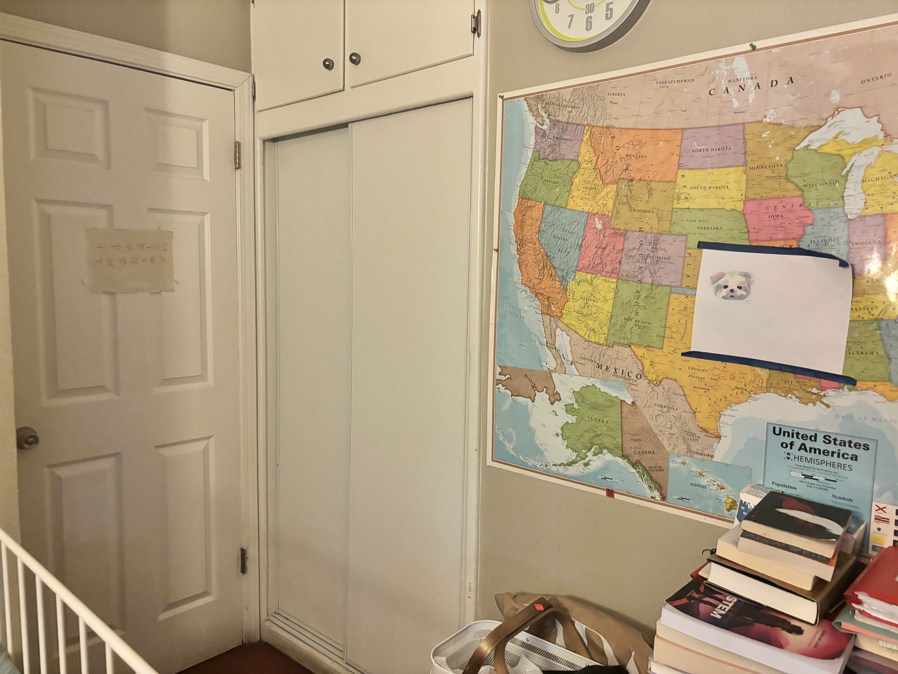
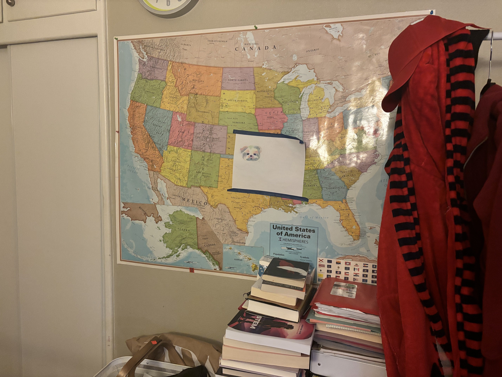
The next step in the project was recovering the homography that maps one image onto another. To achieve this, I wrote the function computeH(im1_points, im2_points), which computes the homography matrix H that aligns corresponding points from the first image (im1_points) with the second image (im2_points). The homography is derived using the equation p' = H * p, where p and p' represent corresponding points from the two images. The matrix H has eight unknowns (since the ninth entry is a scaling factor set to 1), and to solve for these unknowns, we need at least four point correspondences which will be the corners of the quadrilaterals we will warp.
To make the solution more robust to noise and improve the accuracy, I used around 15-20 point correspondences, which generated an overdetermined system of equations. I then solved this system using a least-squares method, which minimized the error in the homography estimation. This allowed for a more reliable alignment between the images, even in the presence of noise or minor inaccuracies in point selection.
After I computed the homographies, the next step was to warp the images using the homography matrix to map each pixel from the source image to the destination image's coordinate system. This step also makes sure that the images are aligned in the same space for the mosaic.
In this part of the code, I implemented the warp_image_with_homography(img, H) function, which warps an image img using a homography matrix H. This function is similar to an inverse warping method I previously implemented in another project. However, in this case, I also included logic to determine the size of the output image. The main approach was to project the corners of the input image through the homography transformation H to compute the bounding box of the final warped image. Once the bounding box was established, I used it to create a grid of destination points where we want to sample pixel values. The key step is inverse mapping: we use the inverse of the homography to map from the destination grid back to the source image and use interpolation to compute the pixel values for these destination points. Due to the change in image size after warping, some destination pixels may not correspond to any source points, leaving gaps in the output. For these pixels, I filled them in with black, indicating that no corresponding source pixel exists in those regions.
For rectification, I transform a perception distorted image to a geometrically aligned version by selecting correspondence points between the distorted image, and a rectangular shape I want it to warp towards that I manually define. To achieve this, I manually selected points that formed a quadrilateral from the source image and mapped them to a rectangle shape I defined to give the appearance of looking at the object front-on instead of from the side. The main challenge was ensuring the precision of the selected points, as even a small misalignment could result in significant distortion in the final result.
This process also involved computing a homography matrix. A homography defines a transformation between two planes, and in this case, it allowed me to map the points from the source image to the target plane. By solving a system of linear equations, I derived the transformation matrix that ensured the warped image was geometrically consistent with the reference points. The solution was implemented using a least-squares method to minimize error, ensuring accuracy even with potential noise in point selection.

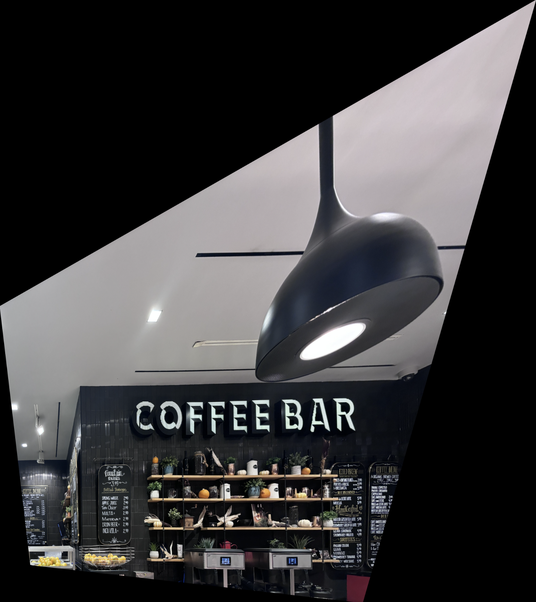
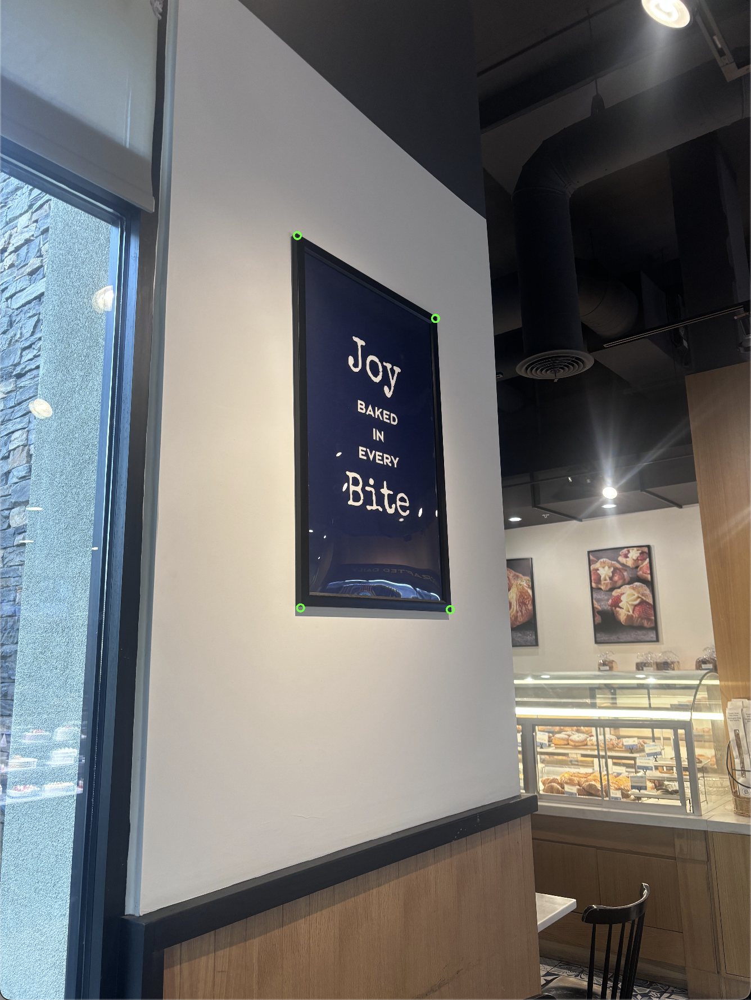
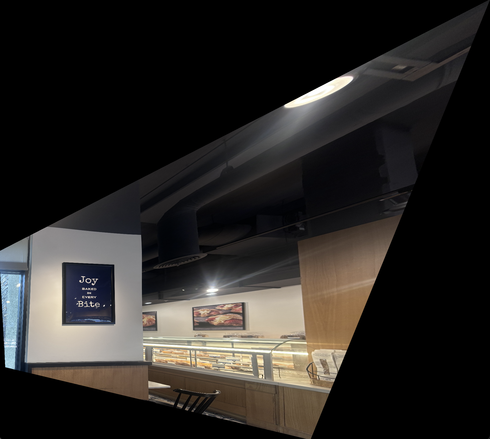
To create the mosaic, I first use the class provided web tool from the previous project to select correspondence points between the left and right pictures of each scene I plan to use. With the code from the previous parts, I determine the H matrix that warps the left image onto the right image in the same space. These then become warped_im1 and warped_im2 which I then add together to create the mosaic. In my code, I first calculated the coordinates of the overlapping region by analyzing the bounding boxes returned by the warping function. Using these coordinates, I created a canvas large enough to hold both images. The images were then placed on the canvas at their respective positions. For this I compute the row and column offsets using the bounding boxes, and then I place im_1_warped, and place im2 offset onto the canvas with these offsets.combination of the two images was applied, resulting in a smooth blend. However, simply overlaying the images would result in visible seams and sharp edges where the images overlap. To solve this, I implemented alpha blending in the overlapping region. The idea behind alpha blending is to compute a weighted combination of the pixel values from both images, with the weight determined by the pixel's position within the overlapping region using the alpha coefficient. In other words, for alpha blending we know the regions of the canvas that are the overlapping sections, so I change the pixel color values for that section with a convex combination of the left and right image. In addition, I have a coefficient alpha that decreases linearly as the pixel moves from left to right in that section. The result is that the at the right side of the overlap, the majority of the pixel contribution is from im2 and for the left side it’s mostly from im2 and a weighted average in the middle.
Below are the mosaics created using this blending technique in the this format: 1) First image with correspondence points overlaid (shown with green circles), 2) Second image with correspondence points overlaid (shown with green circles), 3) Mosaic without blending and after alignment/warping, 4) final mosaic after blending


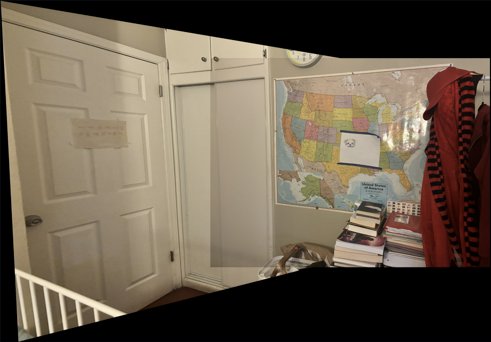
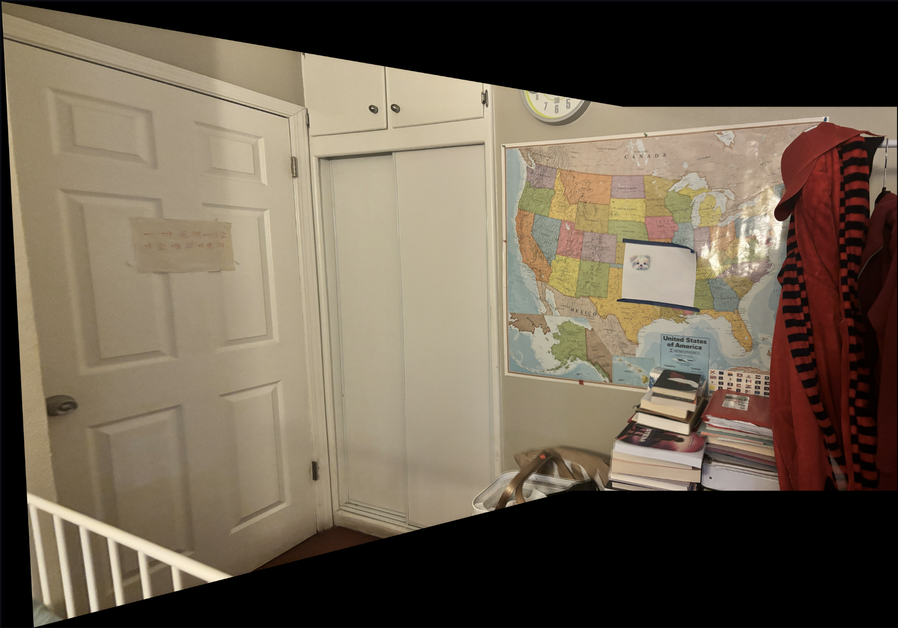
Mosaic 2:


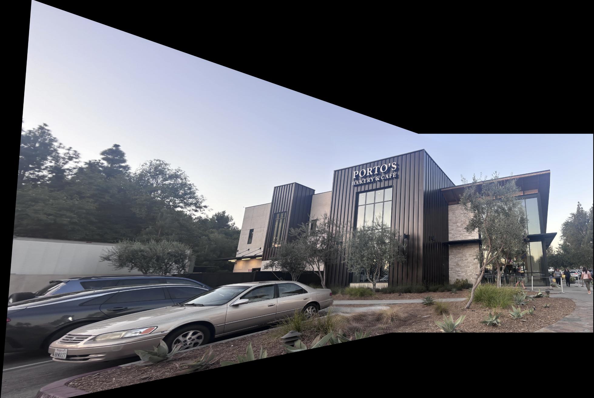
Mosaic 3:


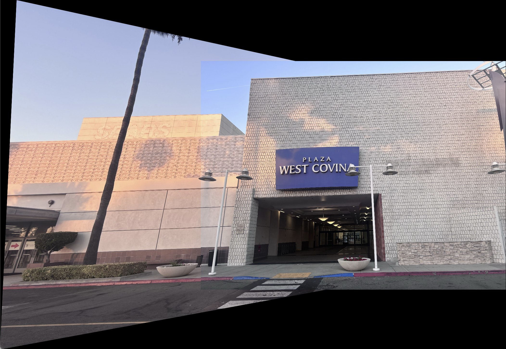
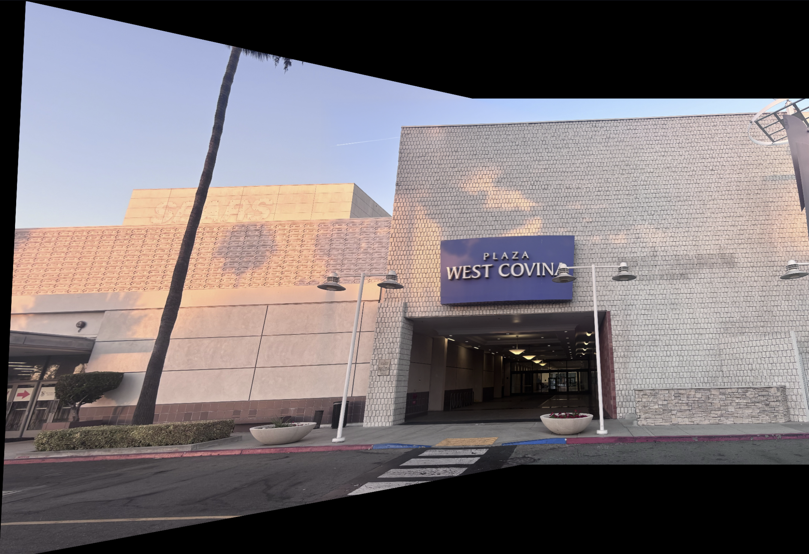
To find potential matching points, I used the provided code for the Harris Interest Corner Detector to identify corners in each image. We use corners for alignment because they represent areas of change in multiple directions, making them unique and less prone to mismatches compared to edges or flat regions. The Harris detector produces a response map of corner “strengths,” from which the strongest corners are selected as potential feature points for matching. The code first computes the corner strengths by using the harmaonic mean of the H matrix Eigen values before picking the local maximal that is above the defined threshold
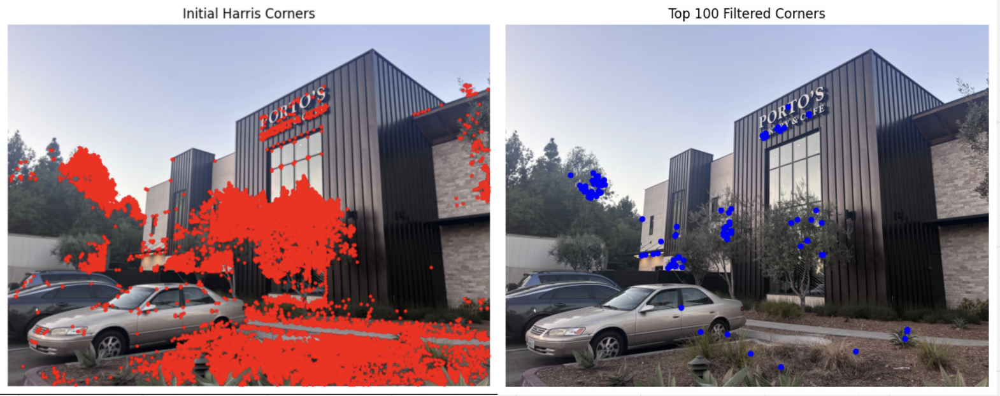
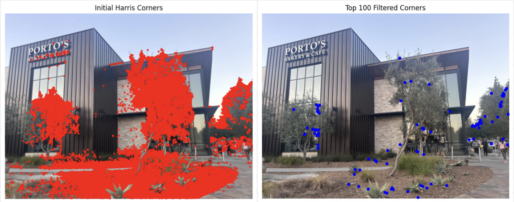
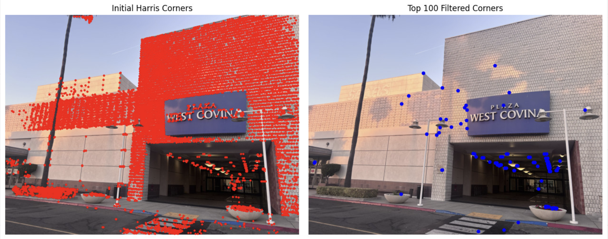
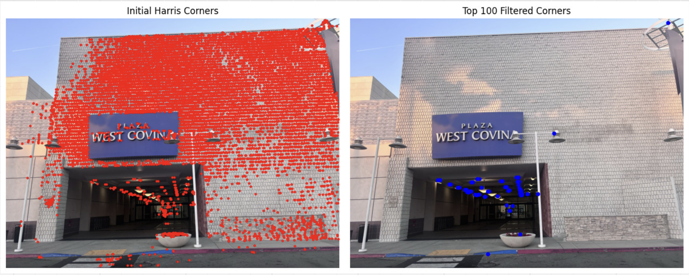
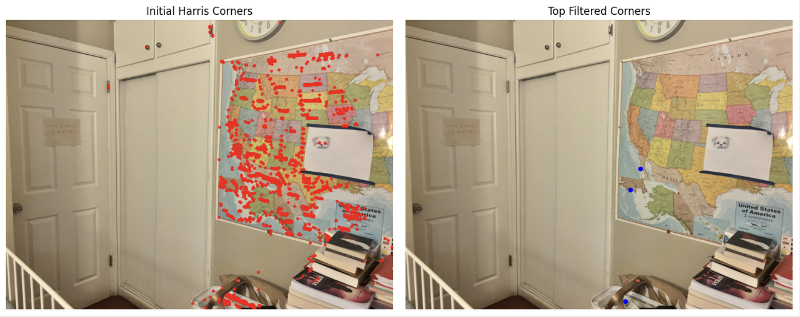
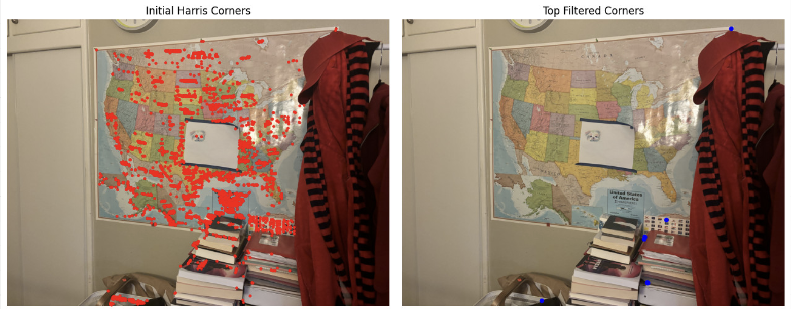
For adaptive non-maximal suppression, I implemented a technique to filter down to the most significant and spatially distributed interest points. First, I calculate the corner strength for each detected point and sort them in descending order of strength. Using this sorted list, the function calculates a "suppression radius" for each point: the smallest distance to another point with a stronger corner response, adjusted by a robustness factor c_robust. This suppression radius ensures that only points with relatively higher strength in their local neighborhood are retained. To efficiently find neighboring points, a KD-tree structure is used, speeding up the search for the nearest stronger points. After calculating suppression radii for all points, I select the top top_n points with the largest radii, ensuring that the strongest points are not only well-distributed but also the most distinct in terms of corner strength. This reduces the initial set of thousands of points to a more manageable subset (around 100), providing a robust and reliable set of feature points for matching.
After detecting corners in the image, I extracted feature descriptors for each corner point to make them comparable across images. For each detected corner, a 40x40 pixel window centered around the point is captured, containing the local texture information. This window is then downscaled to an 8x8 patch, reducing the descriptor's dimensionality while preserving essential details of the surrounding texture. Each descriptor is normalized to mitigate the effects of lighting differences and variations in brightness, allowing it to be consistent under different environmental conditions. This process ensures that each feature descriptor represents the local pattern around the corner and has higher precision.
In this step, I wrote the extract_color_descriptors function to generate descriptors for each image's keypoints, capturing the local texture around each point. I then find correspondences using the match_features function, which calculates distances between all descriptors of the two images. Lowe's ratio test is applied to improve match reliability so for each descriptor, we compare the distance to its nearest neighbor (1-NN) with the second nearest neighbor (2-NN). If the ratio of 1-NN to 2-NN is below 0.6, the match is accepted. After trial and error, I found that setting this threshold to 0.6 allows me to enough matches while reducing false positives. This yields two arrays of matched points, ready for alignment in the next steps.
Unfortunatly, I was unable to enable some of the pictures to have enough matching or the correct matching features so I implemented this part to the best of my ability. This affected my later steps for computing a homography between matches as well as the final mosaics not being very cohesive.
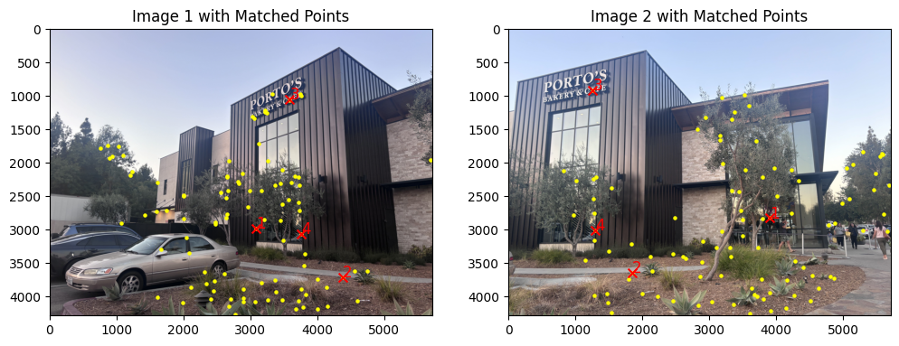
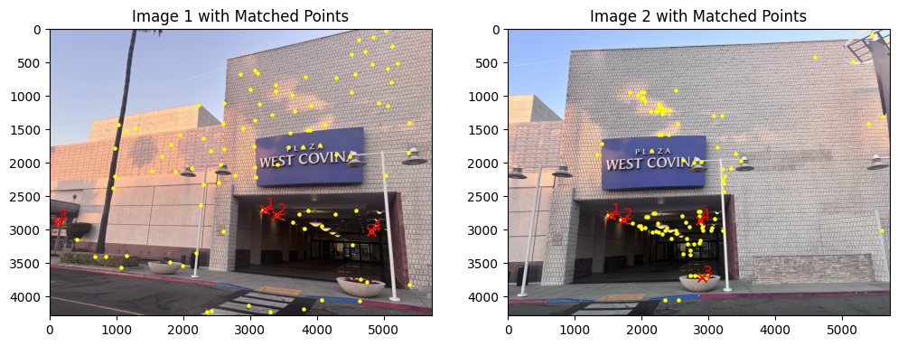
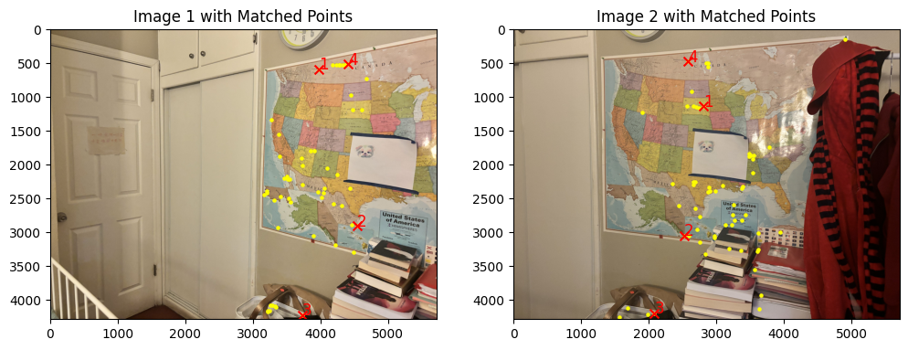
To compute a robust homography, I used an implementation of RANSAC. First, I randomly sampled four pairs of matched points from the set of correspondences and used them to calculate a homography matrix, treating this as a candidate transformation. For each candidate homography, I applied it to all matched points and counted the inliers—points whose transformed position fell within a set distance (epsilon) of their corresponding points in the second image. I repeated this sampling process for all the points, each time calculating a new homography and evaluating it based on the inlier count. At the end of the iterations, I selected the homography with the highest inlier count as the final transformation. This method allowed me to identify a homography that best aligns the images while minimizing the influence of outliers, ensuring a more accurate and stable alignment.
Here are the final mosaics, created using both manual and automatic stitching. Unfortunately my feature matching was not the most accurate so my warping code from part 4a was not able to correctly warp the two images to be a mosaic. Below are the results, the top image being the automatic mosaic while the bottom one is the manual one.
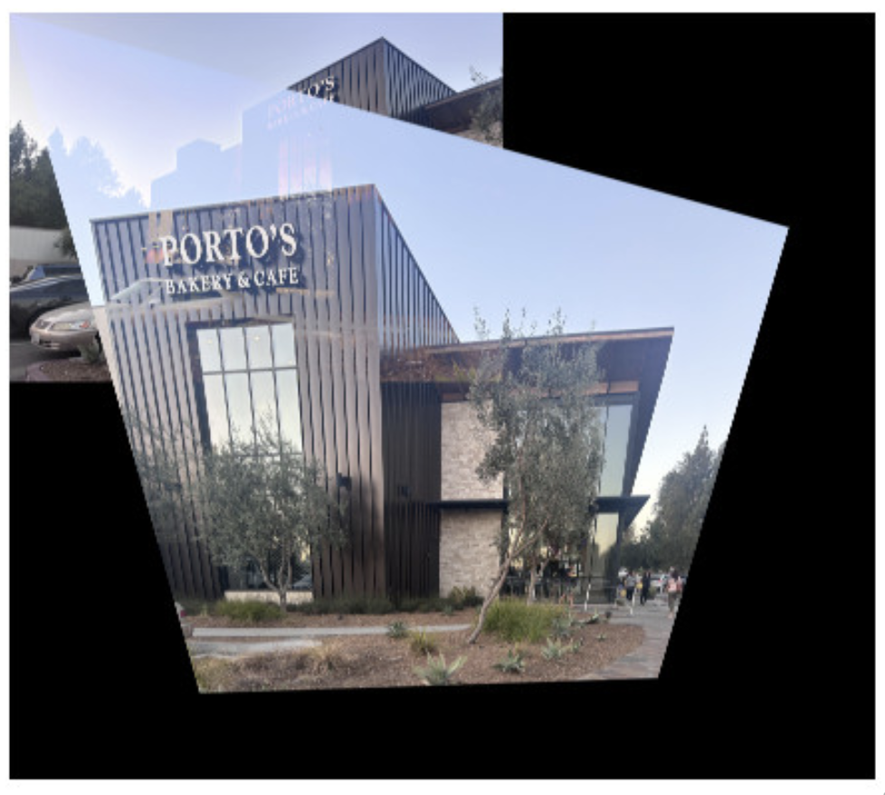
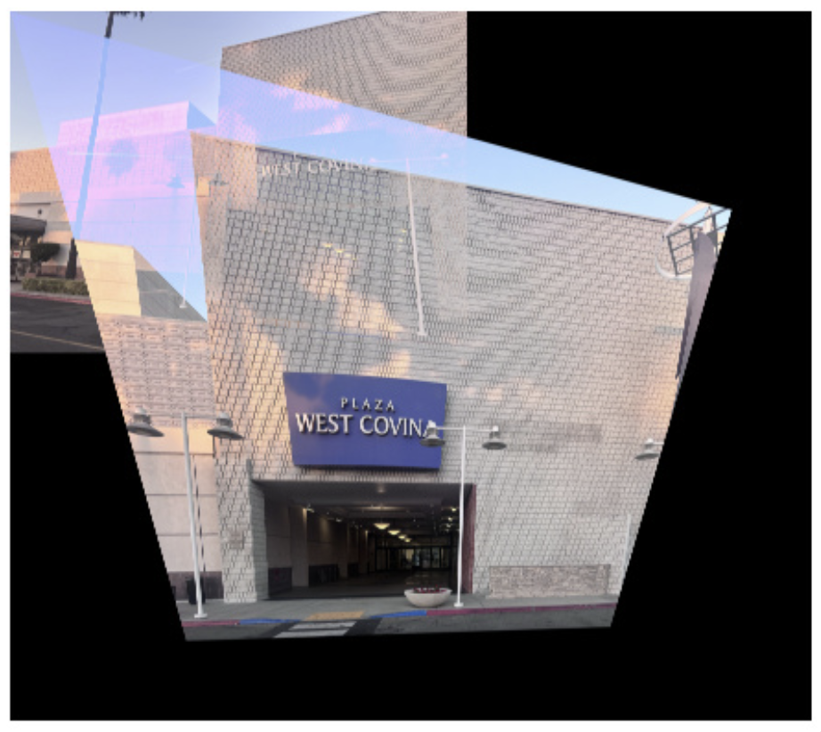
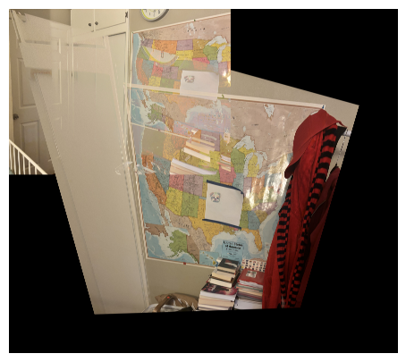
This project taught me how to do feature detection with Harris interest corners in image mosaics. In addition, I thought learning about Lowe's thresholding to use both the first and second neighbor to estimate the interest point correspondence points was interesting.
CS180/280A - Project 4 | October 2024 | Author: Annie Zhang